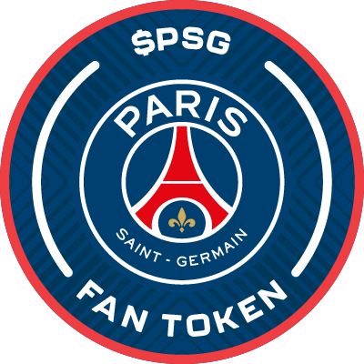

$PSG Price with Key Events
Scroll to zoom, drag to pan. Hover a marker for event details. Source: Binance daily close.
Match Result Correlation
How $PSG moves after a win, draw or loss, measured from 24h before kick-off to 24h after. Medians sit next to averages because a single outlier can skew the mean.
| Result | Matches | During | Postgame | Avg 24h | Median 24h | Up after 24h |
|---|
Correlation is Spearman’s rank correlation between the result (win = 1, draw = 0, loss = −1) and the 24h price move. During = kick-off to full-time, Postgame = full-time to +24h. Match data cross-checked against Fan Token Intel’s own match-correlation feed; note that FTI’s headline “24h impact” is measured from kick-off rather than 24h before. Descriptive only: past reactions don’t predict future moves.
Key Events
Newest first. Match results marked FTI are fetched from Fan Token Intel, with the measured price move from 24h before kick-off to 24h after.